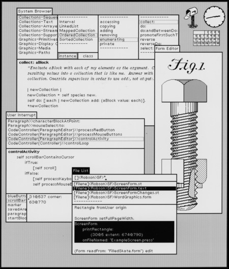
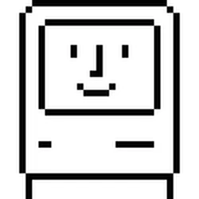

Apple 50 | Macintosh
1979-ben, az Apple belevágott a következő nagy áttörésének fejlesztésébe. Pár hónappal ennek az akkoriban McIntosh néven ismert projektnek a kezdete után, Steve Jobs és pár mérnök meglátogatta a Xerox PARC kutatólaboratóriumot Palo Altóban. Ott, egy demóban bemutatták Steve Jobs-nak azt a szoftvert, ami örökké megváltoztatta azt ahogyan ma használjuk a számítógépeket: A Xerox Alto-t. De, mi is a XEROX Alto? A XEROX Alto az első grafikus felhasználói felület (GUI) azaz a felhasználó interaktálhat grafikusan megjelenített objektumokkal, csak sima szöveg bevitele helyett. Mikor Jobs meglátta ezt a technológiát, egyből felcsillant a szeme.
Teljesen lenyűgözött az első dolog amit mutattak nekem (Xerox Alto). Azt hittem, hogy az volt a legjobb dolo amit egész életemben láttam. Ők (Xerox) lehettek volna a számítógépipar nagyjai. Ők lehettek volna az IBM. Ők lehettek volna a Microsoft.
A Xerox Alto nem csak egy teljesen grafikus felhasználói felülettel rendelkezett, hanem egy egérrel, és egy billentyűzettel is! Persze, ez ma alapnak tűnhet, viszont azt fontos figyelembe venni, hogy ez 1979-ben történt.
Miután Jobs megtudta, hogy a Xerox még nem gondolt a technológia licenszeléséről, egyből lecsapott rá, és megadta a Xerox-nek a lehetőséget, hogy 100,000 Apple részvényt $1 Millióért. Cserébe, használhatják a Xerox PARC technológiáit.

Egy kép a Xerox Alto felhasználói felületéről. Kép: The Interface Experience.
A projekt át lett nevezve McIntosh-ról Macintosh-ra, mivel a név már foglalt volt. A McIntosh egy tényleges almafajta, és Jeff Raskin, a Macintosh projekt egyik beindítója nevezte el a kedvenc almafajtájáról.
Steve ebbe a projekt fejlesztése során is meg akarta osztani a saját kreatív vízióit, és a még kisebb Apple korában Wozniak által elutasított zárt rendszerű számítógép ötletét. Viszont, mi is a "zárt rendszerű számígép"?
Összefoglalva, egy olyan számítógép, ami:
- Kevesebb bővítési lehetőségekkel rendelkezik
- Nehezebb hozzáférhetőséget biztosít a fejlesztőknek, vagy a hardverbütykölőknek
- Gyorsabb, stabilabb és biztonságosabb teljesítményt hozhat
Az Apple ebben az időben megbízta Susan Kare-t, hogy tervezzen ikonokat a Macintosh-hoz. Egyik leghíresebb designja a "Happy Mac" (Boldog Mac).

A Macintosh feljesztési folyamatát egy szóval leírni nehéz lenne, viszont ha kellene, sok Macintosh-on dolgozó Apple mérnök a „pokol" szót használná. Ez Jobs magas elvárásai és sok esetben zaklató személyisége miatt volt. Viszont, a Macintosh így is, úgy is megjelent. A hírdetés amit az Apple csinált a XVIII. (18) Superbowl-ra sokak szerint az egyik legjobb hirdetés valaha.
Az Apple 1984-es Superbowl hirdetése. Videó: Apple Inc. (Magyar Feliratok: Varga Bálint)
A Macintosht egy félsikernek is alig lehet mondani. Amikor 1984 Januárjában megjelent, $2,495 került, azaz több, mint $7,700 ma (2 572 352 Ft). Ez, és a rossz, instabil szoftver miatt a Macintosh-ból csak 500,000 darabot adtak el.
Következő Fejezet →